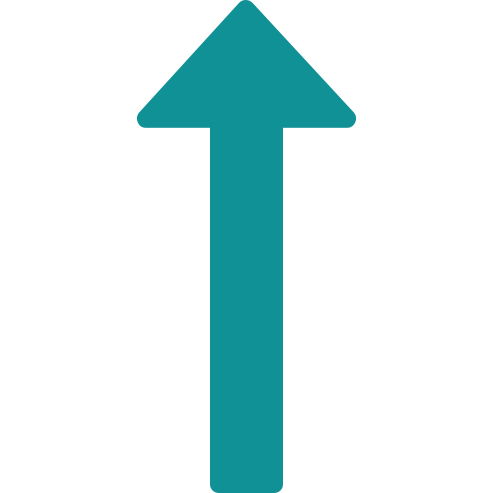

<!--
  Generated template for the GraphPage page.

  See http://ionicframework.com/docs/components/#navigation for more info on
  Ionic pages and navigation.
-->
<ion-header no-border >
  <ion-navbar color="background-none">
    <!-- <ion-title>graph</ion-title> -->
  </ion-navbar>
</ion-header>

<ion-content padding color="custom-light-primary">
  <div class="back-button" (click)="goBackGraph()">
    
  </div>
  <div class="graph-top" text-center>
    <div class="graph-top-heading-inline">
        <div class="graph-top-heading">
            
          </div>
    </div>
    <div class="graph-top-name">
      BTC
    </div>
    <div class="graph-top-price">
      $ 3565
    </div>
    <div class="graph-top-percentage">
      <div>0.25%</div>
      <div>
      </div>
    </div>
  </div>

  <ion-grid class="tab-grid">
   <ion-row justify-content-center class="tab-duration" no-padding>
     <ion-col col-3 no-padding>
       <div class="tabs-duration" text-center>24 Hours</div>
     </ion-col>
     <ion-col col-3 no-padding>
       <div class="tabs-duration tabs-duration-active" text-center>7 days</div>
     </ion-col>
     <ion-col col-3 no-padding>
       <div class="tabs-duration" text-center>1 Month</div>
     </ion-col>
     <ion-col col-3 no-padding>
       <div class="tabs-duration" text-center>All</div>
     </ion-col>
   </ion-row>
  </ion-grid>

  <ion-card>
    <ion-card-header>
      Line Chart
    </ion-card-header>
    <ion-card-content>
      <canvas #lineCanvas></canvas>
    </ion-card-content>
  </ion-card>

</ion-content>
